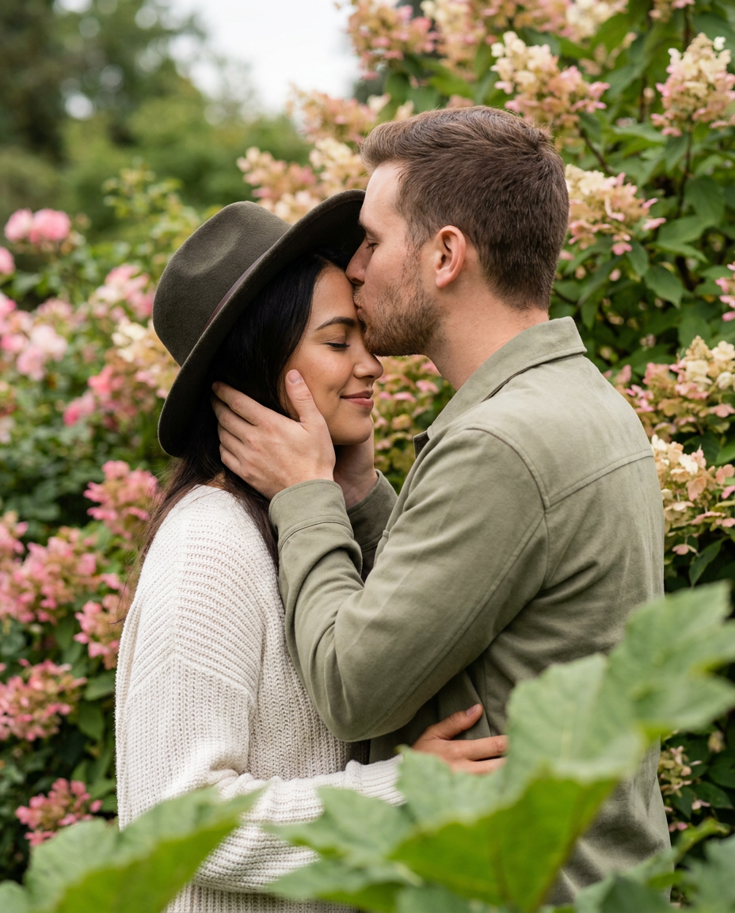
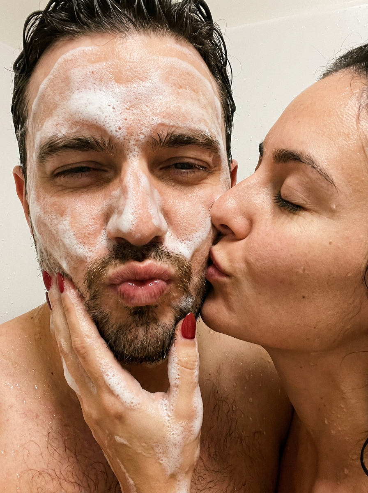
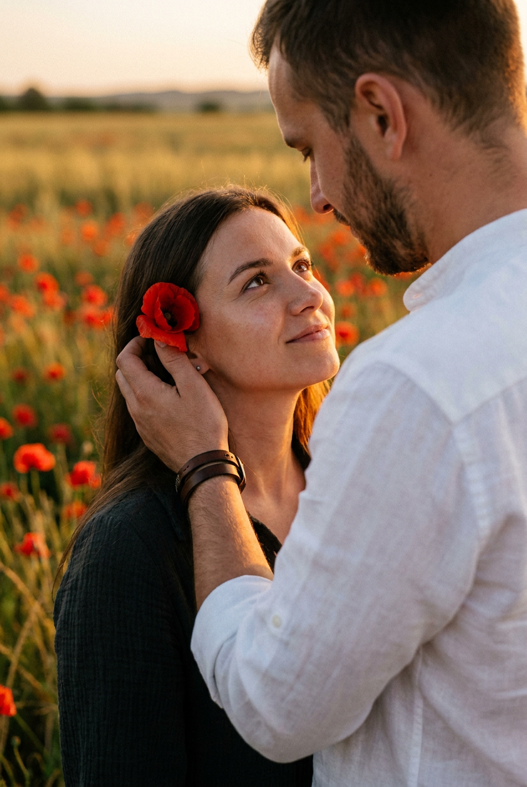
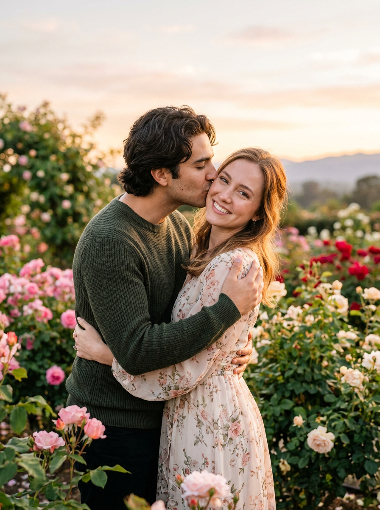
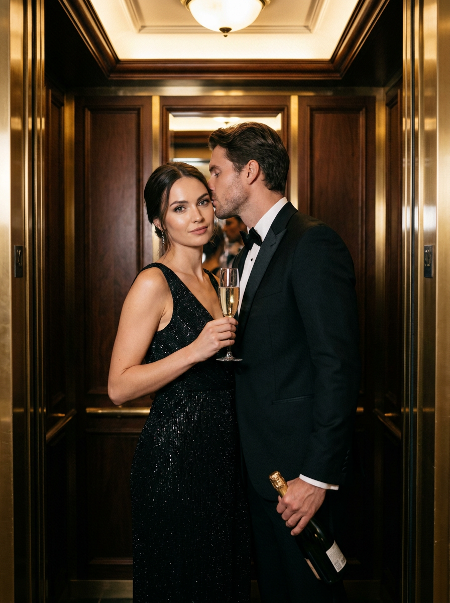
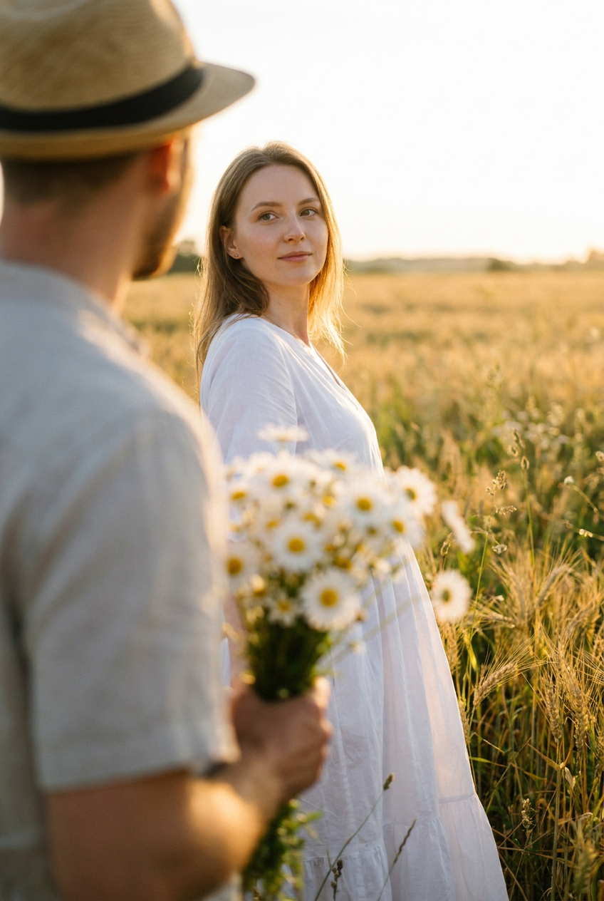
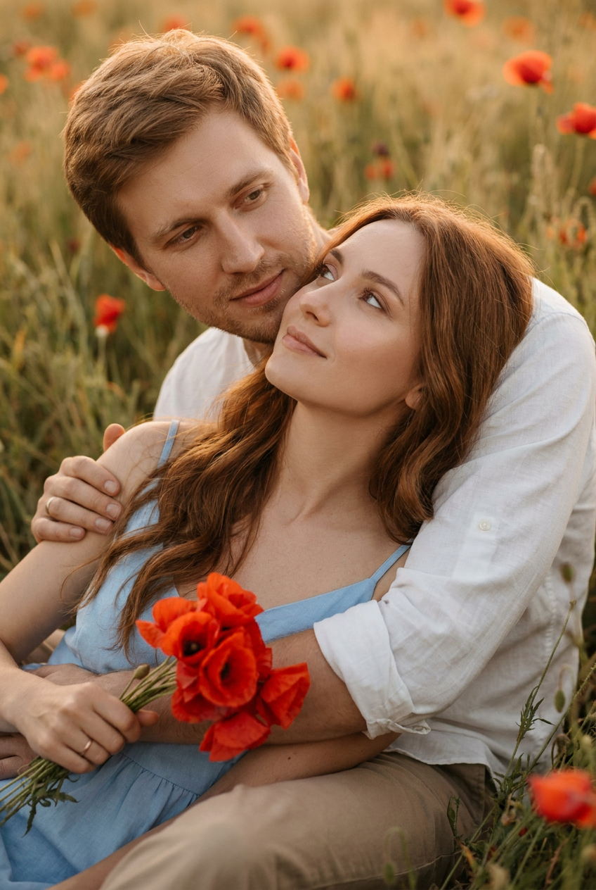
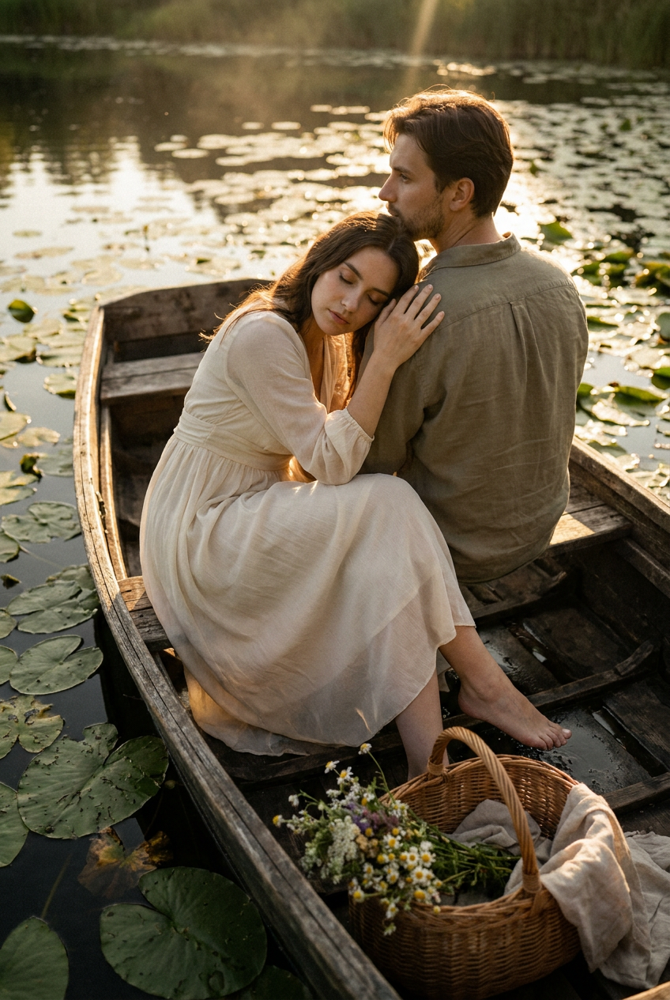
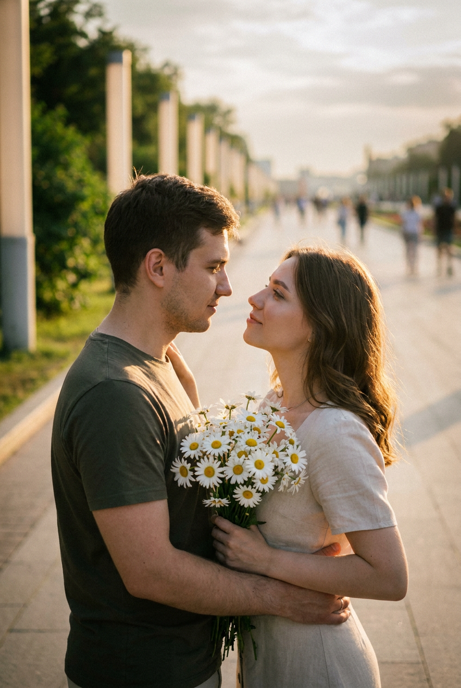
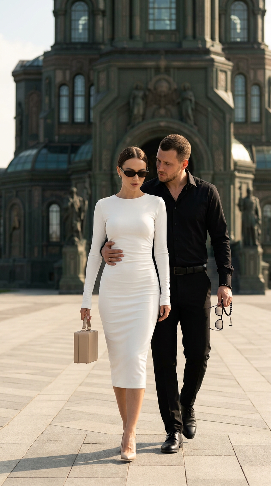

ИИ-фото с парнем: 10 промптов для нейросети

Красивый кадр с парнем не всегда получается поймать в жизни: мешают погода, локация, одежда и неудачный ракурс. Генерация помогает собрать нужную сцену по описанию — от нежного поцелуя в саду до стильной съёмки в лифте.
В подборке — 10 промптов для парных ИИ-фото с разным настроением и светом. Здесь есть маковое поле, пруд с кувшинками, душевая, городская аллея, романтика на закате и fashion-кадр в белом платье.
Как сгенерировать такое фото: пошагово
Нужен снимок анфас при ровном свете, лицо в кадре целиком, без тёмных очков и головных уборов. Разрешение от 1000 пикселей по короткой стороне. Чем чётче исходник, тем точнее модель повторит черты.
Выберите сценарий ниже и нажмите «Копировать» — текст уйдёт в буфер целиком, вместе с командой сохранения внешности. Эта команда стоит первой строкой и отвечает за то, чтобы на выходе было ваше лицо, а не случайное.
Кнопка «Сгенерировать» рядом с каждым промптом открывает модель в новой вкладке. Nano Banana Pro работает с референсом лица — в отличие от моделей, которые генерируют портрет с нуля и узнаваемость теряют.
Промпт — в поле ввода, портрет — через загрузку референса. Порядок значения не имеет, но без референса команда сохранения внешности работать не будет: модели нечего сохранять.
Для сторис и ленты берите 9:16, для превью и обложек — 4:3. Первый результат редко идеален: если поза или свет ушли не туда, поправьте соответствующую часть промпта и запустите заново. Обычно хватает двух-трёх итераций.
10 промптов для генерации
1. Поцелуй в цветущем саду
Строго сохранить внешность по загруженному референсу: черты лица, пропорции, мимику и текстуру кожи без изменений. Создай вертикальную фотореалистичную фотографию влюблённой пары среди густых цветущих кустов и садовой зелени. Женщина должна выглядеть точно как на загруженном референсе: сохранить форму лица, глаза, брови, нос, губы, скулы, пропорции и индивидуальную узнаваемость. Рядом — взрослый естественно привлекательный мужчина с короткой аккуратной стрижкой и лёгкой щетиной или короткой бородой, без глянцевой модельной внешности. Он стоит вплотную, мягко обхватывает её лицо ладонями за щёки и шею и наклоняется для поцелуя в лоб, щёку или почти в губы. Женщина закрыла глаза, расслаблена и доверяет ему. Поза близкая, почти объятие, свет мягкий, атмосфера тёплая и интимная, как в романтической love story.
2. Шуточное селфи в душе

Строго сохранить внешность по загруженному референсу: черты лица, пропорции, мимику и текстуру кожи без изменений. Сделай крупный вертикальный кадр 3:4, похожий на случайный плёночный снимок из жизни пары, снятый в душевой. Камера находится совсем близко и немного выше уровня глаз, направлена сверху вниз. Мужчина на переднем плане; половина его лица покрыта густой белой мыльной пеной. Он складывает губы уточкой, слегка прищуривает один глаз и улыбается ситуации, сохраняя расслабленное выражение. Женщина прижимается к нему справа, показана в профиль и целует его с закрытыми глазами. В её лице — нежность, спокойствие и доверие. Не меняй индивидуальные черты лиц с референсов: форма глаз, носа, губ, лица и пропорции должны остаться узнаваемыми. Оставь ощущение живого, смешного и очень близкого момента, без постановочной глянцевости.
3. Нежность среди красных маков

Строго сохранить внешность по загруженному референсу: черты лица, пропорции, мимику и текстуру кожи без изменений. Сгенерируй вертикальную фотореалистичную фотографию пары в поле красных маков, максимально близкую к референсу по композиции, освещению, масштабу и настроению. Съёмка крупным планом: в центре внимания лица, руки и прикосновение. Женщина расположена слева, немного дальше от камеры, мужчина — справа и ближе; его плечо, шея и часть лица занимают правую переднюю область кадра, создавая эффект личного присутствия. Сохрани лица обоих по загруженным референсам: глаза, нос, губы, скулы, подбородок, линию волос, оттенок кожи и естественную мимику. Кожа должна быть живой, без пластикового эффекта и чрезмерной ретуши. Поза естественная и близкая, свет мягкий, тёплый, романтичный, с ощущением спокойной нежности.
4. Свидание в розовом саду

Строго сохранить внешность по загруженному референсу: черты лица, пропорции, мимику и текстуру кожи без изменений. Создай вертикальный фотореалистичный кадр романтической пары в цветущем саду на закате. Вокруг — густые розовые кусты и зелёная листва, мягкий золотистый свет проходит сквозь растения. Черты лиц должны точно соответствовать загруженным референсам: не изменяй овал лица, глаза, брови, нос, губы, скулы, подбородок и пропорции. Мужчина — молодой взрослый с мягкими естественными чертами, без карикатурности и чрезмерно идеальной внешности. Он обнимает женщину обеими руками за талию и спину и легко целует её в щёку или висок. Она немного развёрнута к камере, слегка наклоняет голову и улыбается тепло, спокойно и счастливо. Сцена должна выглядеть как живая съёмка для love story или помолвки: интимно, естественно и без напряжённых поз.
5. Шампанское в роскошном лифте

Строго сохранить внешность по загруженному референсу: черты лица, пропорции, мимику и текстуру кожи без изменений. Сделай вертикальную фотореалистичную fashion-фотографию пары в узком роскошном лифте или деревянной кабине с дорогой отделкой. Сохрани внешность людей по загруженным референсам: индивидуальные черты, форму лица, глаз, бровей, носа, губ, скул, подбородка и естественные пропорции. Мужчина одет в чёрный смокинг или вечерний костюм, белую рубашку и бабочку. Он стоит близко, слегка наклоняется к женщине и целует её в висок, щёку или возле уха, держа в руке бутылку шампанского. Женщина расслабленно прижата к нему корпусом и смотрит в объектив либо чуть в сторону — спокойно, чувственно и с лёгкой игривостью. В одной руке у неё бокал игристого вина, вторая лежит у его талии или на плече. Свет отражается от металлических деталей, настроение — вечернее и редакционное.
6. Букет в мягком боке

Строго сохранить внешность по загруженному референсу: черты лица, пропорции, мимику и текстуру кожи без изменений. Для Nano Banana Pro создай кинематографичный вертикальный портрет в поле при дневном золотом свете или на закате. Девушка в лёгком белом платье находится в резкости: её лицо и верхняя часть тела должны быть максимально чёткими, с сохранённой индивидуальной внешностью и естественными пропорциями. Мужчина стоит на переднем плане спиной к камере, слева или ближе к центру, но заметно размыт сильным боке; его шляпа, фигура и небольшой букет белых ромашек с жёлтыми серединками читаются мягко, хуже, чем лицо девушки. Букет он держит поднятым вверх, в сторону девушки. Используй портретную ориентацию, глубину резкости с фокусом только на женщине, тёплый кинематографичный цвет и натуральный свет. Не превращай размытие мужчины в случайные артефакты.
7. Объятие в маковом поле

Строго сохранить внешность по загруженному референсу: черты лица, пропорции, мимику и текстуру кожи без изменений. Сгенерируй вертикальную романтическую фотографию пары среди высокой травы и красных маков. Свет мягкий, тёплый, слегка золотистый — закатный или предзакатный. Композиция, поза, цветопередача и эмоциональное настроение должны быть близки к референсу: кадр интимный, спокойный и очень нежный. Мужчина сидит или полулежит на земле, женщина находится рядом и устраивается в его объятиях, создавая ощущение защищённости и близости. Сохрани лица обоих по их референсам: возрастные особенности, форму глаз, носа, губ, скул, подбородка, линию волос, оттенок кожи и естественную мимику. Лица должны выглядеть живыми и узнаваемыми, без искажений, пластиковой кожи и сильной ретуши. Покажи детали прикосновений, траву и маки, но не перегружай передний план.
8. Лодка среди кувшинок

Строго сохранить внешность по загруженному референсу: черты лица, пропорции, мимику и текстуру кожи без изменений. Создай кинематографичную романтическую сцену на маленькой деревянной лодке посреди пруда, покрытого лилиями. Вертикальный кадр немного шире обычного портрета: оставь больше воды и окружения, расположи пару не строго по центру, а по правилу третей, с открытым пространством в направлении воды. Камера слегка поднята и наклонена вниз; передний, средний и задний планы должны различаться. Мужчина сидит в задней части лодки, слегка повернувшись. Женщина расслабленно прислоняется к нему, её голова лежит у его груди, одна рука мягко покоится на его плече. Ноги вытянуты вперёд, одна ступня едва касается поверхности воды. Сохрани лица и индивидуальные черты людей с загруженных фотографий. Выражение женщины спокойное, взгляд расслабленный, поза естественная, свет мягкий и атмосферный.
9. Букет на городской аллее

Строго сохранить внешность по загруженному референсу: черты лица, пропорции, мимику и текстуру кожи без изменений. Сделай вертикальный портрет пары на широкой уличной аллее рядом с колоннами или аркой и зелёными насаждениями. Сохрани лица, пропорции и узнаваемость девушки и её парня, а также естественный угол поворота головы — не разворачивай их полностью к камере. Парень стоит слева и обнимает девушку обеими руками вокруг талии или корпуса. Она прижата к нему, развёрнута в его сторону и слегка наклоняет голову к его лицу. Они смотрят друг на друга на близком расстоянии, словно за секунду до поцелуя или сразу после него. В центре средней зоны кадра находится букет белых ромашек или маргариток с жёлтыми серединками. Фигуры размести в левой или центрально-левой части, справа оставь воздух, зелень и перспективу дорожки. Свет дневной, фон мягко отделён от пары.
10. Белое платье на площади

Строго сохранить внешность по загруженному референсу: черты лица, пропорции, мимику и текстуру кожи без изменений. Создай фотореалистичную fashion/editorial-фотографию с кинематографичным настроением: вертикальный формат 9:16, средний план в полный рост, камера на уровне груди модели и лёгкий нижний ракурс. Используй портретный объектив 70–85 мм, слегка сжатую перспективу и минимум геометрических искажений. Композиция центрирована, главный объект — женщина, идущая по мощёной площади. Её корпус немного повёрнут влево, шаг направлен вперёд, руки опущены естественно. На ней облегающее белое миди-платье с длинными рукавами из гладкого плотного матового джерси или трикотажа. В руке — аккуратная модная сумочка коробочной формы из гладкой кожи или фактурного материала бежевого, пудрового оттенка либо цвета слоновой кости; держать её можно за верхнюю ручку или на сгибе локтя. Рядом с ней — парень, органично вписанный в парный fashion-кадр; лица сохранить по референсам.
Что важно учесть в этом стиле
Романтичный ИИ-кадр держится не только на внешности героев. В промпте нужно задать расстояние между людьми, направление взгляда, положение рук и точку съёмки. Если написать просто «пара влюблена», нейросеть сама выберет случайную позу — часто неестественную.
Для фотореализма полезно указывать объектив и глубину резкости: 70–85 мм дадут спокойный портрет без сильных искажений, а открытая диафрагма отделит героев от фона. Для селфи и динамичных сцен, наоборот, лучше описывать близкую камеру, лёгкую асимметрию и живую мимику.
Идеи для вариаций
- Замените маки на лавандовое поле, подсолнухи или высокую сухую траву.
- Перенесите сцену в оранжерею, зимний сад, старый театр или отельный коридор.
- Попросите мягкий дождь, отражения на мокрой плитке или контровой свет сквозь листву.
- Добавьте винтажную цветопередачу, плёночное зерно или редакционный глянец без пластиковой кожи.
- Измените настроение: нежное утро, смешное селфи, вечернее свидание или спокойный момент после прогулки.
Как собрать свой промпт
Начните с формата и типа съёмки: вертикальный портрет, кадр 9:16, крупный план или снимок в полный рост. Затем опишите локацию, время суток и свет. После этого добавьте каждого героя, одежду, положение тела, жесты и выражение лица. В конце задайте объектив, фокус, глубину резкости и требования к натуральной коже.
Если используете референс, разделяйте идентичность и сцену: отдельно укажите, чьи черты нужно сохранить, а отдельно — какую позу и композицию повторить. Для сложных кадров полезно ограничить задачу: например, сфокусировать женщину, а мужчину оставить в боке. Сделайте 3–5 генераций, меняя за один раз только ракурс, свет или жест.
Ошибки, из-за которых кадр не получается
- Слишком общая поза. Фраза «они романтично обнимаются» не объясняет, где находятся руки и куда направлены лица.
- Конфликтующие указания. Не просите одновременно крупный план лиц и полный рост с большим количеством окружения.
- Перегруженный фон. Множество цветов, предметов и источников света отвлекает от пары и создаёт артефакты.
- Нет контроля фокуса. Если нужен эффект боке, укажите конкретного резкого героя и размытого персонажа.
- Чрезмерная ретушь. Формулировки вроде «идеальная кожа» часто превращают лицо в пластиковую маску.
- Слишком много изменений за раз. Сначала добейтесь правильной позы и сходства, затем меняйте одежду, цвет и локацию.
Частые вопросы
Как сделать такое ИИ-фото бесплатно?
Для первых попыток подойдут Kandinsky и Шедеврум: они позволяют создавать изображения без оплаты, но качество сходства и работа с референсом могут быть нестабильными. В Krea AI и Arena.ai обычно проще тестировать разные модели и настройки, однако бесплатный режим может иметь ограничения по числу генераций, скорости, разрешению и загрузке исходных фото. Для точного сходства лица лучше использовать сервис, где есть image-to-image или функция референса, и проверять правила обработки личных изображений.
Как сохранить сходство с лицом на фото?
Загрузите чёткий референс без сильных фильтров и поворота головы, а в промпте отдельно укажите, что нужно сохранить индивидуальные черты, пропорции и естественную мимику. Не добавляйте одновременно слишком много стилистических изменений. Если лицо всё равно меняется, уменьшите силу стилизации, выберите более близкий ракурс и сделайте несколько вариантов.
Почему руки и лица пары искажаются?
Нейросети сложнее всего обрабатывают перекрывающиеся тела, пальцы, поцелуи и лица под острым углом. Описывайте положение каждой руки, не прячьте кисти за предметами и не перегружайте сцену. Помогает генерация в несколько этапов: сначала получить правильную композицию, затем исправить лицо или руки встроенным редактором.
Можно ли использовать Nano Banana Pro для таких сцен?
Да, Nano Banana Pro удобно применять для кадров с несколькими персонажами, референсами и точной композицией. В промпте лучше явно разделять героев, указывать, кто находится на переднем плане, где должен быть фокус и какие элементы размыты. Даже при хорошем описании понадобится несколько попыток: модель может менять детали одежды, пальцы, цветы или выражение лица.